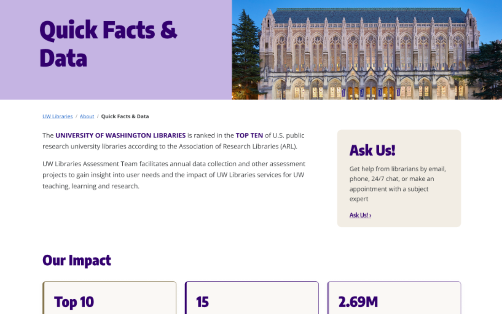

Question the first framing.
The initial problem statement is rarely the whole problem.
I'm a Human Centered Design & Engineering student at the University of Washington who turns ambiguous user needs into clear product decisions, thoughtful prototypes, and understandable digital experiences.

Led a 3-person team redesigning UW Libraries' Quick Facts & Data page — real sponsor, two rounds of stakeholder feedback, and an IT feasibility constraint along the way.
Led a four-person team’s research and product direction for a hybrid event and avatar app that helps fandom students connect with less social pressure.
An AI assistant that reads what's on your screen and visually guides you to what you need using a red circle, an arrow, and plain-language explanation. Prototype built, PRD in progress.
Finished a mobile app I built during a UW research group on AI-assisted development — a gamified tool for professional speaking practice. Also writing up a brand redesign case study for Queen Mary Tea.
User interviews, reviews, observation, competitive analysis
Problem statement, personas, success metrics, scope
Sketches, wireframes, hi-fi prototype, usability testing
Test concepts and prototypes against the success criteria defined earlier.
The initial problem statement is rarely the whole problem.
Design for people who are rushed, distracted, or uncertain.
A launch is not proof that a product helped someone.
I graduate in June 2027 and am seeking full-time product design, UX, and product management roles. I’m also open to part-time internships during the academic year. If you're working on something that matters to real people, I'd love to talk.
Get in touch View Resume